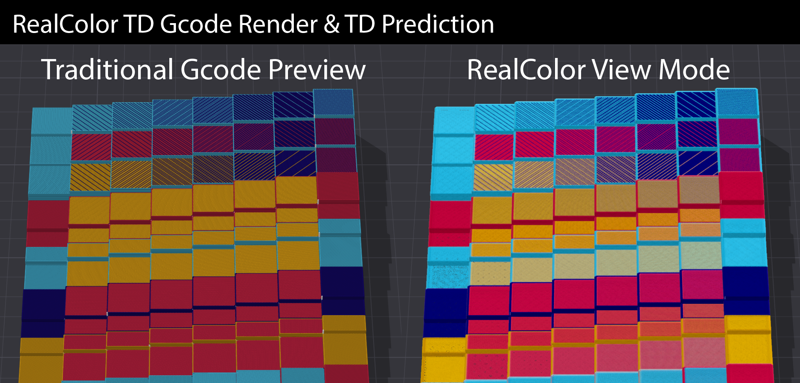
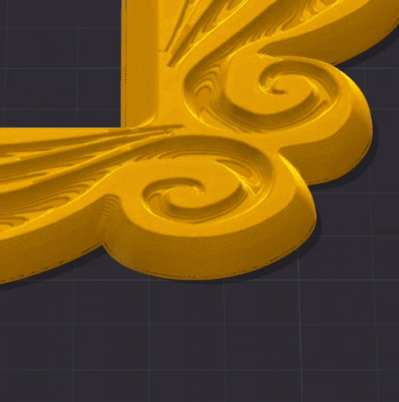
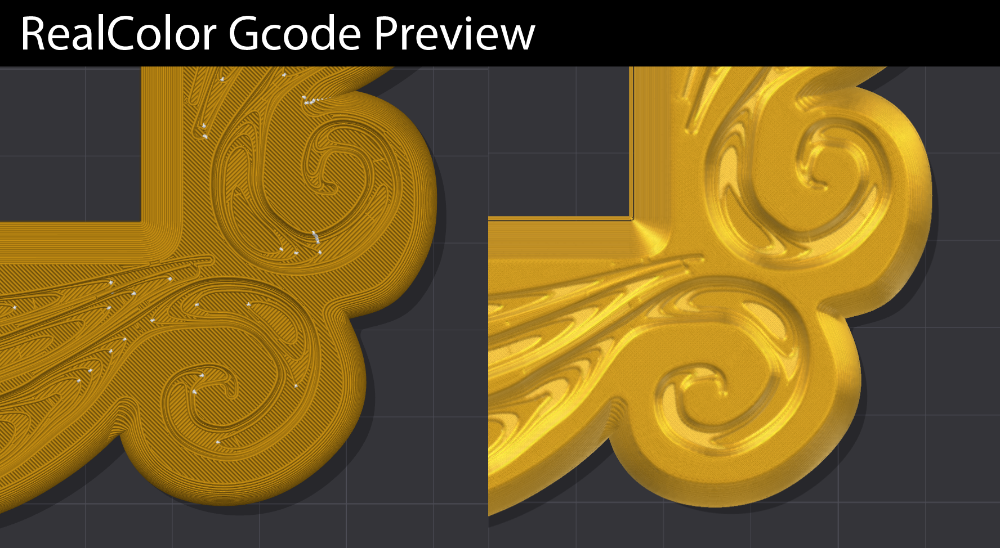
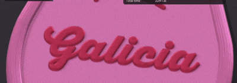
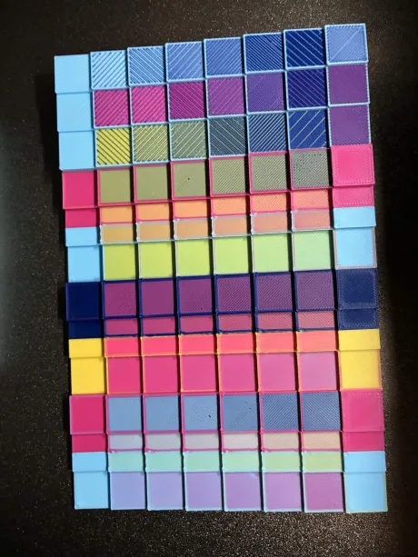
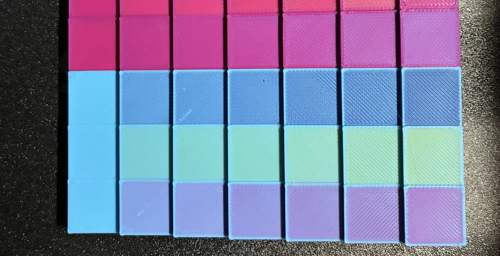
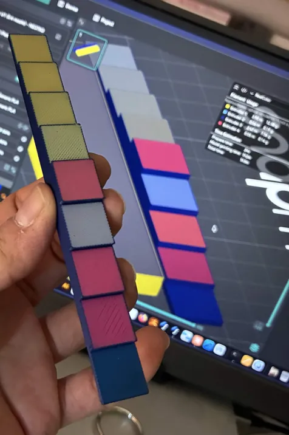

§20 · §21 · §22 — Output
RealColor & Photo Mode
Every slicer draws multi-material G-code the same way: each extrusion in its filament's raw colour. For a toolchange preview that is the right answer. For a Sandwich it is the wrong one, because a surface of blue and pink lines does not print as blue and pink lines.
- no gate for RealColor
- Libre Mode for Prepare's Photo Mode
- 2.4.4
Where Preview›the view-type dropdown›RealColor
Read line by line, it looks like stripes
A Sandwich surface is a stack whose colours mix optically as light passes through the upper passes and bounces off the ones underneath. Drawn extrusion by extrusion, it reads as hard diagonal stripes. Printed, it is one blended colour. Those two pictures of the same G-code are so far apart that using the standard preview to judge a Sandwich will send you back to the editor to fix something that was never wrong.
RealColor renders the second picture. It composites each surface the way your eye will resolve it, using each filament's TD to decide how much of what is underneath shows through.

What it is actually doing
Each extrusion is a slab of material with a thickness and a filament. RealColor peels the
geometry apart layer by layer, front to back, and composites the slabs with the decadic
Beer–Lambert law: a slab of thickness d made of a filament with transmission
density TD lets through 10^(−d/TD) of what is behind it.
That is the same formula, and the same code path, as the Result swatch in the Sandwich Editor. The engine's reference version and the shader's version are different recurrences of the same sum, and there is a test that runs both against synthetic stacks and asserts they agree. The whole thing runs in linear RGB into a 16-bit float buffer, because round-tripping through 8-bit sRGB across up to 128 peeled layers would bake in visible banding.
If you want to play with the maths rather than read about it, that is what the Colour Mixer is for: same formula, your filaments, live.


Photo Mode, in the G-code viewer 2.4.4
Where RealColor legend›Photo mode…
RealColor got close enough to a photograph of a printed part that going back to the Prepare tab to light one stopped making sense. The lighting is no longer welded into the shader: key and fill can be aimed by dragging a ball, and the part is lit in the room rather than by a lamp bolted to the camera. Orbit and the light stays where you put it.

Supports, brim and the wipe tower are not part of the mesh that casts, so they do not throw shadows.
Getting the picture out
Save PNG… and Copy image, at 1080p, 1440p or 2160p, over a pure white or a fully transparent background. No bed, no plate, no grid, just the print.
Paste the PNG onto any colour and the part still sits on a soft shadow instead of floating on it. It is the same shadow that was already on your screen, so it costs nothing to use, and it is the difference between a cutout and a product shot.
Two things about the export were found the hard way and are invisible until you compare files side by side. The picture is rendered at twice the resolution and averaged down, which is what stops the joints between extrusion lines showing as speckle on a white background; the dark viewport had been hiding them all along. And the screen-space effects are rescaled for the export, so the photo is not flatter than what you were looking at.
Filament finish and TD live in their own window (Filament finish…, next to Photo mode in the legend) and are shared with the normal view. There is deliberately no second copy of them inside Photo Mode.
Photo Mode, in Prepare
- Libre Mode
- 2.4.2
Where Prepare›the camera button on the plate icon column
A client asks what the part looks like in a different colour. You change it, and now you need a picture. Opening a real renderer for that is a five-minute detour for a thirty-second question, so in practice you send a screenshot of the slicer: gantry, grid, logo, toolbars and all.
Photo Mode turns the Prepare viewport into a small photo studio. Your object does not move and does not change; everything around it does. It changes nothing about the model, the settings or the G-code, and Esc leaves it.
The stage
| Stage | What you get |
|---|---|
| Print bed | Everything as normal, for when the bed is the context you want to show. |
| Lightbox | A cyclorama: a floor that sweeps up into a back wall through a rounded corner, with no visible seam. The white sweep a product photographer shoots against. |
| Backdrop | The floor alone, no wall. For top-down shots. |
On Lightbox and Backdrop the bed, grid, exclusion zones, plate numbers, the Snapmaker logo, the gizmos and the toolbars all disappear. The logo goes first, because it is the single most obvious "this is a screenshot of a slicer" element in the frame. The camera button stays, because it is also how you get out. Floor colour, size as a multiple of your bed, and corner radius are all adjustable.
Lights
Three of them: key, fill and rim. Each has a draggable ball instead of three number boxes, so you drag toward where you want the light and the shadow follows. Azimuth and elevation are also shown in degrees, so a setup you liked can be written down and reproduced.
The light lives in the room, not on the camera. Orbit around the object and the lighting stays put, the way it would in a real studio. The normal viewport does the opposite, pinning its light to your eye, which is why an object never has a dark side while you spin it. Only the key casts the shadow; each light has an intensity and a colour tint.
| Preset | What it is for |
|---|---|
| Neutral (as viewport) | Identical to the normal 3D view. The default, so entering Photo Mode changes the scene around the object rather than the object. |
| Studio 3-point | Key high to one side, fill opposite to open the shadows, rim behind to separate the object from the backdrop. |
| Softbox top | One big overhead source, heavy ambient. The "product on white" look. |
| Rim / backlight | Weak key, strong edge light from behind. Sells profile and surface finish. |
| Flat catalog | Deliberately boring: almost no shadow, heavy ambient. What a shop listing wants, and what survives being cropped. |
| Dramatic | Grazing key, almost no fill. Long shadows, which sell geometry rather than colour. |
Materials, per filament slot
| Material | Reads as |
|---|---|
| Plastic | The default, pixel for pixel the shading you already had. |
| Glossy / resin | Small, hard highlight. Polished or resin-printed. |
| Matte PLA | Broad, weak sheen. |
| Rubber / TPU | Almost no highlight, which is exactly what makes TPU look like TPU. |
| Metal | Highlight tinted by the object's own colour, no diffuse. |
| Silk | Half-metallic: a coloured sheen over a coloured body, which is what silk PLA actually is. |
On a painted multi-colour object the material follows the colour, not the part. One keyring body can be matte on the stripes and metal on the lettering, from a single mesh. Metal and Silk look much better with the Environment on, because a metal is sold by what it reflects.
Environment, quality and the floor reflection
Environment is off by default. When on, it builds a virtual room out of your own three lights, which the objects then reflect: move the key and its reflection moves with it. A rotate room control turns the reflections without moving the lighting, which is the fastest way to make a metal look right. It is off by default on purpose, because with it on Photo Mode no longer reproduces the normal viewport exactly, and that equivalence is worth keeping as the starting point.
| Quality | Shadow map | Floor reflection |
|---|---|---|
| Normal | 2048 px | — |
| High | 4096 px | available |
| Ultra | 8192 px | available |
The higher tiers also widen the shadow's soft edge to match the resolution. Raising the resolution alone would give you a thinner but equally hard edge: better measured, worse looking. The floor reflection mirrors the objects, stronger at grazing angles, and it is a genuine reflection of the scene rather than a screen-space approximation, so it does not fall apart at the object's outline. That is the part of a reflection anyone actually looks at. It draws the whole scene a second time, which is why it is gated above Normal: on an M4 with a fairly complex model, Ultra with the reflection on runs at 10–15 fps. Fine for framing a still, not meant for modelling.
Save PNG and Copy to clipboard are disabled in Prepare's Photo Mode as of 2.4.4: the off-screen render frames the shot wrongly, and a button that writes a broken file is worse than no button. Use Hide UI for screenshot, which clears every control including the panel itself for an adjustable few seconds so you can grab the frame with your system tool. Or use the G-code viewer's Photo Mode, which does export properly.
My presets saves lights, materials, stage, environment and quality under a name. They are stored with the application rather than in the 3MF, because a lighting setup is your preference as the person taking the picture; it should follow you across projects rather than ride along inside a model file that gets shared and printed.
The real prints
Everything above is previews and dialogs. This is the printed result, so you can judge for yourself how far the simulation is from the plastic.

BIGTEST.3mf board: many filament pairs, mix ratios and pass structures at once. The project file is in the fork's repository, so you can slice and print the same reference.

The catch
- TD is what makes it accurate. With TD roughly right the match to the printed part is genuinely close. With TD left at defaults on filaments that differ a lot in opacity the preview drifts, and it drifts convincingly.
- It is a simulation, not a promise. The panel says so itself: "Approximated optical simulation, not a guarantee of the final print colour." Surface finish, lighting and the printer's own colour behaviour all move the result.
- TD is a grey absorber. One scalar broadcast to all three channels, so a filament that absorbs green harder than blue is not modelled. The engine's data structure already holds three values; the interface does not fill them in.
- It is not free to draw. Depth peeling costs a geometry pass per layer. It recomputes when the camera stops moving, not while you orbit.
- The legend is reduced. RealColor shows Filament Usage and Time Estimation only. The per-tool tower and cost breakdown, and the Travel / Retract / Seams toggles, belong to the Filament view.
- Transparent materials are deliberately not supported in Photo Mode. Showing a client a semi-transparent part would be dishonest, because that is not how it comes off the printer. If you want to see inside a part, that is what RealColor is for, where the translucency is the whole point.